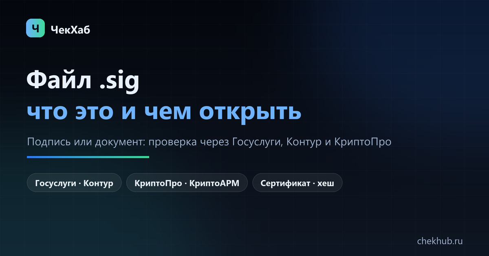

Файл .sig — что это и чем открыть: проверка подписи по шагам
Вам прислали файл с расширением .sig, а он не открывается ни в Word, ни в PDF-просмотрщике. Это нормально: .sig — не документ, а электронная подпись к нему. Ниже — как за минуту понять, что внутри, как проверить подпись без установки программ, чем открыть .sig на компьютере и что делать, если документа рядом нет.

Главное, что нужно понять сразу: .sig — не документ, а подпись к нему. Проверяют всегда парой «документ + файл подписи», и никакая конвертация не превратит подпись в читаемый PDF.
Если файл пришёл, а что с ним делать — непонятно
от 250 ₽ за файл: посмотрим, что внутри .sig, проверим подпись, скажем, кем и когда подписан документ и цел ли он.
Нужен читаемый PDF или Word из присланного документа — соберём. Срок 1 рабочий день.
Файлы не публикуем и не передаём третьим лицам; после работы удаляем.
Три разных файла с расширением .sig
Расширение .sig — это не формат, а сокращение от signature. Под одним и тем же именем приходят три совершенно разные вещи, и от этого зависит, откроется файл вообще или нет:
- Подпись к документу (ЭЦП) — то, что в девяти случаях из десяти имеют в виду. Рядом лежит сам документ:
Договор.pdfиДоговор.pdf.sig. Внутри — криптографическая подпись и сертификат подписанта, а текста документа нет. - Подпись письма — файл почтового клиента с реквизитами отправителя (S/MIME, PGP). Outlook и Thunderbird подхватывают его сами и показывают, что подпись проверена; вручную такой файл обычно не нужен.
- Служебный файл программы — например, данные Adobe или файл шрифта Брайля для слабовидящих. К электронной подписи он отношения не имеет, хотя расширение то же.
Первый признак, который отличает ЭЦП от всего остального: двойное расширение и документ с тем же именем рядом. Второй — размер: файл подписи весит 2–8 КБ, потому что внутри только сертификат, штамп времени и криптографический блок. Если файл весит мегабайты, это точно не подпись.
Третья путаница — визуальная подпись. Картинка с росписью или штамп «подписано» на странице PDF не делает документ юридически подписанным: это оформление. Квалифицированная подпись (КЭП) — всегда отдельный криптографический блок или встроенный в PDF контейнер, и проверяют её программами, а не глазами.
Что внутри .sig: сертификат, хеш и время подписи
Файл подписи — это контейнер CMS/PKCS#7 (в России — с алгоритмами ГОСТ). Внутри три вещи:
- Сертификат подписанта — X.509: кто подписал (ФИО или название организации), какой удостоверяющий центр его выдал, срок действия, отпечаток. В дополнительных полях сертификатов российских УЦ обычно есть ИНН или СНИЛС — по ним удобно сверить, тот ли это человек.
- Сама подпись — зашифрованный хеш документа. Именно поэтому изменение текста даже на один символ ломает проверку: хеш перестаёт совпадать.
- Время подписания (signingTime, иногда со штампом времени УЦ) — когда документ подписали.
Ключевое различие — отсоединённая и присоединённая подпись. В отсоединённой самого документа внутри нет: есть только подпись к нему, поэтому .sig и не открывается как документ. В присоединённой документ упакован внутрь контейнера — тогда файл содержит и текст, и подпись, но достать текст можно только программой.
Живой пример из нашей практики. Пришёл файл …_1.sig весом 3 459 байт. Разбор показал: PKCS#7/CMS signedData, содержимого (eContent) нет — подпись отсоединённая; подписант — Фонд пенсионного и социального страхования, сертификат выдан Федеральным казначейством и действовал с 17.09.2025 по 11.12.2026, время подписания — 20.11.2026, 08:54 UTC. Узнать удалось только, кто и когда подписал. Самого документа в файле не было, поэтому «открыть» его невозможно: нужен второй файл из той же посылки.
Как за минуту понять, что за файл — без установки программ
До всякой криптографии нужно ответить на один вопрос: подпись это к документу или что-то другое. Три шага, для которых ничего устанавливать не надо:
- Посмотрите на имя и соседей. Есть файл
Акт.pdf.sig— значит, где-то должен бытьАкт.pdf. Если документ с тем же именем рядом, у вас комплект для проверки. - Посмотрите размер. 2–8 КБ — почти наверняка подпись. Сотни килобайт и больше — внутри документ или это вообще не ЭЦП.
- Откройте «Блокнотом» (правой кнопкой → «Открыть с помощью» → «Блокнот»). Текст с реквизитами — подпись письма или конфигурация программы. Строка вида
MIIG…или-----BEGIN PKCS7-----— закодированный контейнер подписи. Набор нечитаемых символов — двоичный DER: это тоже подпись, просто без кодирования.
Дальше простая таблица: что у вас есть, что это значит и что делать.
| Что есть | Что это | Что делать |
|---|---|---|
Договор.pdf + Договор.pdf.sig | Документ и отсоединённая подпись к нему | Проверить оба файла вместе (Госуслуги или Контур.Крипто) |
только Договор.pdf.sig | Подпись без документа | Проверить нельзя: запросить у отправителя сам документ |
| PDF, внутри картинка подписи | Визуальная подпись, не КЭП | Юридической силы квалифицированной подписи нет |
.sig с текстом внутри | Подпись почтового клиента | Ничего не делать: клиент проверяет сам |
.sig на 1–2 МБ и больше | Не подпись: служебный файл | Определить по содержимому, к ЭЦП не относится |
Один запрет, который экономит время: не переименовывайте .sig в .pdf или .docx. Расширение не меняет содержимое: внутри останется тот же криптографический блок, файл не откроется ни в Word, ни в просмотрщике PDF, а исходное имя подписи будет потеряно.
Посмотреть, что внутри вашего файла, можно прямо здесь: разбор .sig в браузере — покажет подписанта, сертификат и время подписания, не отправляя файл на сервер.
Способ 1: Госуслуги — без установки программ
Самый быстрый путь, если нужно просто понять, кто подписал и цел ли документ. Сервис называется «Проверка электронной подписи электронного документа» и живёт по адресу e-trust.gosuslugi.ru/check/sign. Работает без КриптоПро и без регистрации:
- Откройте страницу проверки.
- В верхнее поле загрузите сам документ (PDF, DOCX, XML — тот файл, который подписывали), в нижнее — файл .sig. Если подпись присоединённая, документ и подпись лежат в одном файле, и загружается один файл.
- Нажмите «Проверить» и прочитайте протокол: кто подписал, каким сертификатом, действовал ли сертификат на дату подписания, не изменён ли документ.
Что важно знать про этот способ: проверяются квалифицированные подписи (КЭП и УНЭП), а не любая криптография. Если у вас самодельная подпись на PGP или подпись иностранного сервиса, её он не разберёт — и это не значит, что файл плохой. Если подпись сделана по ГОСТ с сертификатом, который на дату проверки уже истёк, протокол покажет это отдельной строкой — и это нормальная ситуация для архивных документов: важно, что сертификат был действителен в момент подписания.
Способ 2: Контур.Крипто — если документ из бизнес-оборота
Сервис crypto.kontur.ru делает то же самое: загружаете документ и подпись, получаете протокол с владельцем сертификата, сроком его действия и статусом целостности. Он удобнее, когда документы приходят от контрагентов, которые работают через СБИС, Диадок или Контур.Экстерн: сервис узнаёт их сертификаты и показывает организацию по-человечески, а не только латиницей в поле CN.
Логика выбора простая: документ от госоргана — Госуслуги, документ от контрагента — Контур или тот сервис, через который его прислали. Оба варианта бесплатны для проверки и не требуют установки криптопровайдера.
Способ 3: КриптоПро CSP и КриптоАРМ — полная проверка на компьютере
Если документов много, они от разных контрагентов или нужно не только проверить подпись, но и подписать ответные, ставят криптопровайдер. Минимальный комплект: КриптоПро CSP (или ViPNet CSP 4) и программа для работы с документами — КриптоАРМ ГОСТ или «КриптоПро PDF».
В КриптоАРМ проверка и просмотр делаются так:
- Меню «Файл» → «Просмотреть документ».
- «Далее» → «Добавить файл» — выбираете сам документ. Подпись программа подхватывает сама, если она лежит рядом с тем же именем.
- «Далее» → «Готово». Документ откроется в режиме чтения, а статус подписи будет показан в окне.
Чтобы открыть документ, на компьютере должна быть программа, которая понимает его формат: docx — Word, pdf — просмотрщик PDF. КриптоАРМ отвечает за подпись, а не за содержимое.
Для проверки подписи на сайтах (порталы ведомств, личные кабинеты УЦ, площадки закупок) нужен ещё КриптоПро ЭЦП Browser plug-in — он создаёт и проверяет подпись прямо в браузере. После установки плагин проверяют на диагностической странице КриптоПро: если диагностика не проходит, сайты с подписью работать не будут, даже когда сертификат установлен.
Два минуса этого пути, о которых пишут сами поставщики: лицензия на криптопровайдер платная, а демоверсии короткие. Если задача разовая, первые два способа дешевле и быстрее.
Способ 4: проверить там, где документ появился
Часто отдельная проверка не нужна: система, которая выдала документ, уже умеет проверять свою подпись.
- 1С — в карточке документа есть проверка сертификата: показывает владельца и статус подписи, если криптопровайдер установлен.
- СБИС, Контур.Диадок, Контур.Экстерн — подпись проверяется автоматически при приёме документа; в карточке видно, кто подписал и когда. Если файл скачали оттуда, вернуться в карточку отправки проще, чем проверять вложение вручную.
- Госключ — приложение для подписания физлицом: свои документы проверяются в нём же.
- Личные кабинеты ведомств — если файл пришёл из СФР, ФНС, суда или другого госсервиса, там есть раздел с отправленными документами и статусом подписи. Наш пример с
.sigот СФР — ровно этот случай: сам документ лежит в кабинете получателя, а в письме пришла только подпись.
Порядок действий, который экономит полдня: сначала посмотрите, откуда файл, и проверьте в источнике; и только если источник недоступен, идите на Госуслуги или в Контур.
Что не сработает — и почему
| Способ | Что получится |
|---|---|
| «Блокнот», Word, любой текстовый редактор | Увидите текст (если это подпись письма) или набор символов. Проверить подпись нельзя: редактор не умеет считать хеш и проверять сертификат |
Переименовать .sig в .pdf | Ничего не изменится: содержимое то же, файл не откроется |
| Онлайн-конвертеры PDF и «универсальные открыватели» | Могут определить тип файла, но не проверяют подпись. Отправлять документ в случайный сервис — риск для конфиденциальности |
| Просмотр реквизитов сертификата без документа | Узнаете, кто подписал, но не узнаете, к чему и не изменён ли документ |
| Проверка «на глаз» по картинке подписи | Визуальная подпись не равна КЭП: юридической силы у неё нет |
Отдельная ловушка — пересылка. Если из письма переслать только .sig или только документ, комплект разрывается, и проверка становится невозможной. Отправляйте оба файла или архивом.
Ошибки при проверке и что они на самом деле значат
| Сообщение | Причина | Что делать |
|---|---|---|
| «Подпись неверна», «документ изменён» | Файл документа отредактировали после подписания (иногда — при пересохранении или конвертации PDF в PDF) | Запросить исходную версию у отправителя; сверять подпись с тем файлом, который подписывали |
| «Сертификат недействителен», «срок истёк» | Сертификат подписанта просрочен или отозван на дату проверки | Смотреть дату подписания: важна действительность сертификата в этот момент, а не сегодня |
| «Не найден сертификат», «не удалось построить цепочку» | Нет корневого сертификата УЦ в хранилище | Проверить на Госуслугах или в Контуре: там справочник сертификатов полный |
| «Неизвестный тип подписи» | Подпись не ГОСТ и не КЭП: PGP, иностранный сервис, самоподписанный сертификат | Проверять тем инструментом, которым подписывали |
| «Файл подписи не соответствует документу» | К .sig подложили другой документ — например, исправленную версию договора | Взять документ из того же письма или архива |
| «Файл зашифрован» | Документ не только подписан, но и зашифрован получателю | Нужен закрытый ключ получателя: без него содержимое не прочитать |
Одна частая путаница — ГОСТ 2001 и ГОСТ 2012. Свежие криптопровайдеры понимают оба, старые версии КриптоПро CSP — только первый. Если проверка падает с сообщением об алгоритме, обновите криптопровайдер, а не переподписывайте документ.
Как из .sig получить читаемый PDF или Word
Короткий ответ: никак, если нет самого документа. В подписи нет текста — только сертификат и криптографический хеш. Поэтому «конвертировать .sig в PDF» невозможно ни в одном сервисе, и предложение «переведём ваш .sig в PDF за 300 рублей» означает одно из двух: либо у исполнителя есть документ, либо он пришлёт пустышку.
Что делать по шагам:
- Найдите документ. Посмотрите письмо целиком (вложения часто ниже видимой части), архив, папку загрузок, историю мессенджера. В нашем случае с СФР документ лежал в личном кабинете получателя, а
.sigпришёл письмом. - Запросите документ у отправителя. Формулировка, которая работает: «пришлите, пожалуйста, сам файл документа вместе с файлом подписи — у меня только .sig».
- Если документ есть, но не читается — это отдельная задача: XML из ведомства, «кракозябры» в txt, скан в PDF без текстового слоя. Здесь нужна конвертация, а не проверка подписи.
Второй сценарий — документ есть, но нужен редактируемый Word. PDF из ведомственной системы, как правило, «печать», а не текст. Распознавание делается по документу, а не по подписи, и результат всегда проверяют глазами: таблицы и подписи-картинки при распознавании плывут.
Как мы разбираем такие файлы
Мы не продаём «открытие .sig» — мы отвечаем на вопрос, который за этим стоит: кто подписал, к чему, когда и цел ли документ, и что делать дальше. Порядок работы:
- Разбор контейнера. Смотрим структуру PKCS#7: присоединённая подпись или отсоединённая, какие алгоритмы, есть ли внутри содержимое. Если внутри документ — достаём его.
- Сертификат. Выписываем подписанта, УЦ, срок действия, отпечаток, ИНН или СНИЛС из дополнительных полей, время подписания.
- Проверка. Если есть документ и в нём нет данных, которые нельзя передавать, проверяем подпись через официальные сервисы; для чувствительных документов даём инструкцию, как проверить самому, не отдавая файл никому.
- Результат. Короткий отчёт: кто подписал, когда, к какому документу, что с целостностью, и что делать дальше.
Что прислать: файл .sig, документ (если есть), от кого получен и что нужно на выходе. Стоимость разбора — от 250 ₽ за файл, конвертация документа в PDF или Word — от 250 до 750 ₽ в зависимости от объёма. Срок — 1 рабочий день. Файлы не публикуем, не передаём третьим лицам и удаляем после работы.
Короткая памятка
.sig— это подпись, а не документ. Текста внутри нет.- Проверяют парой: документ + файл подписи. Один
.sigбесполезен. - Без установки программ — Госуслуги (e-trust.gosuslugi.ru/check/sign) или crypto.kontur.ru.
- Полная проверка на компьютере — КриптоПро CSP + КриптоАРМ ГОСТ.
- «Переименовать в PDF», «конвертировать .sig онлайн» — не работает. Нужен исходный документ.
- Если файл пришёл от госоргана — сначала посмотрите в личном кабинете ведомства: документ обычно там.
Разбор документов — часть нашей работы с отчётностью: рядом с выгрузкой чеков из ОФД мы собираем и проверяем первичку. Если у вас пачка подписанных документов и нужно привести их в порядок, опишите задачу на странице услуг или в заявке.
Частые вопросы
Чем открыть файл .sig?
Если это подпись к документу — специальной программой: на Госуслугах (e-trust.gosuslugi.ru/check/sign), в Контур.Крипто (crypto.kontur.ru), в КриптоАРМ ГОСТ или КриптоПро PDF. Текстовый редактор покажет только содержимое контейнера и подпись не проверит.
Файл .sig — это документ или подпись?
Почти всегда подпись. Если рядом лежит файл с тем же именем без расширения .sig (например, Акт.pdf и Акт.pdf.sig), то документ — это Акт.pdf, а .sig нужен только для проверки подписи. Внутри .sig текста документа нет.
Можно ли открыть .sig без КриптоПро?
Да. Проверка на Госуслугах и в Контур.Крипто работает без установки криптопровайдера: загружаете документ и файл подписи, получаете протокол с владельцем сертификата и статусом целостности.
Почему .sig не открывается в Word или PDF?
Потому что это не документ, а контейнер CMS/PKCS#7 с сертификатом и криптографической подписью. Word и просмотрщики PDF не умеют его читать: им нечего показывать.
Можно ли переименовать .sig в PDF?
Нет. Расширение не меняет содержимое: внутри останется тот же криптографический блок. Чтобы получить PDF, нужен сам документ, к которому сделана подпись.
Что делать, если есть только .sig, а документа нет?
Проверить подпись невозможно: она относится к конкретному файлу. Запросите документ у отправителя или найдите его в личном кабинете ведомства, из которого пришло письмо (в нашем случае с СФР документ был в кабинете получателя).
Как узнать по .sig, кто подписал документ?
Внутри файла лежит сертификат подписанта: имя или организация, удостоверяющий центр, срок действия, иногда ИНН или СНИЛС. Увидеть это можно при разборе контейнера или в протоколе проверки на Госуслугах, если есть документ.
Почему проверка пишет «сертификат недействителен»?
Скорее всего, срок сертификата истёк или его отозвали. Для архивных документов это нормально: важна действительность сертификата на дату подписания, а не на сегодня. Проверьте также, что в хранилище есть корневой сертификат УЦ.
Чем отличается .sig от .p7s и .sgn?
Обычно это одно и то же семейство контейнеров CMS/PKCS#7 с разными расширениями: .sig используют одни системы, .p7s — другие. Для проверки разницы нет, а точный формат показывает разбор файла.